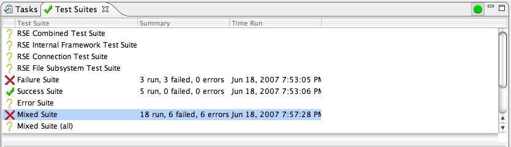

The Test Suite View shows the registered test suites in the workbench. The view allows them to be sorted by clicking on the column headings, run individually, run in batches, run in the background or in the UI thread. You can reset the tests and re-run them. This is useful when debugging the function driven by a test, when debugging the test itself, or when testing varitions between intial and subsequent runs. You can also see the test results of any test suite that has been run.
To open the Test Suite View use the Window -> Show View -> Other... menu item and select the Test Suites View from the Testing category.
The Graphic column shows the status of the test. It show a question mark if the test has not been run or has been reset, a red X if the test suite has a test case that has failed or produced an exception, and a green check if the test has run to completion. In keeping with the philosophy of JUnit it is updated as the test suite is run so you know immediately if there are any failures.
The Test Suite columns show the name of the test suite.
The Summary column is blank if the test has not yet been run. It shows the number of test cases run, the number failed, and the number of unexpected errors. It is updated as the test suite is run.
The Time Run column is blank if the test has not yet been run. It shows the time the test suite began running, not the time it finished.
You bring up a context menu containing the test suite actions by selecting a test suite (or several) and right-clicking. The actions may be grayed out if they are not available for that particular selection of tests. You select tests by clicking on them. You can add test suites to (and remove test suites from) the selection by using control-click. You can select a range of tests by using shift-click.
The Results Pane shows the results of a test suite that has been run. Each test case in the suite has an entry that shows its success or failure with any remarks generated by a testcase during its run. If the test case fails, the entry shows the reason for the failure along with the stack trace for the exception. The results pane may be copied so you can place it in a defect or an e-mail.
You can move the divider between the Test Suite Pane and the Results Pane up and down as necessary.